Logomarca e Brand
Identidade visual, paleta de cores e aplicações da marca AI Horizon Labs
Paleta de cores
Identidade oficialAzuis profundos transmitem tecnologia e confiança; o dourado do sol traz energia e o calor do nascer do dia no Pampa. Use os tons primários para estruturas e o dourado como destaque pontual.
#1A4FB5Primária#2E7CD6Primária clara#0A1F4DPrimária escura#F7A823Destaque#FCD06CDestaque claro#E08A12Destaque escuro#1F2937Texto#F8F9FAFundo#FFFFFFFundo / textoSímbolo vertical, azul gradiente
Assinatura principal candidataVersões empilhadas e centralizadas com o monograma "A" em gradiente azul e o sol nascente sobre o horizonte. Transmitem profundidade e tecnologia. Indicadas para uso institucional de destaque (capa, apresentações, perfil).

Vertical gradiente - A
Tagline "Advancing AI Beyond the Horizon".
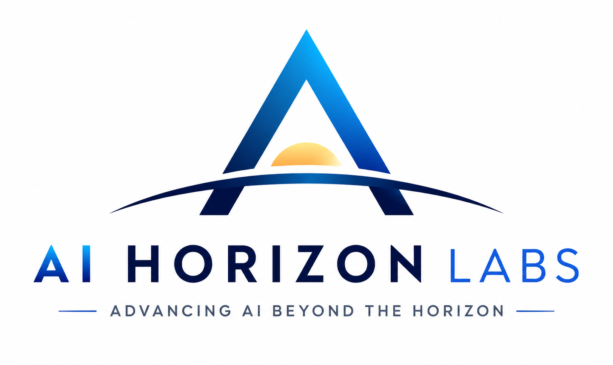
Vertical gradiente - B
Variação do mesmo conceito, ajuste de proporção e brilho.
Símbolo vertical, monocromático
Versão preto e brancoO mesmo símbolo vertical em uma só cor, em fundo claro e em fundo escuro. Essenciais para documentos, carimbos, fundos coloridos e situações de impressão em uma cor.
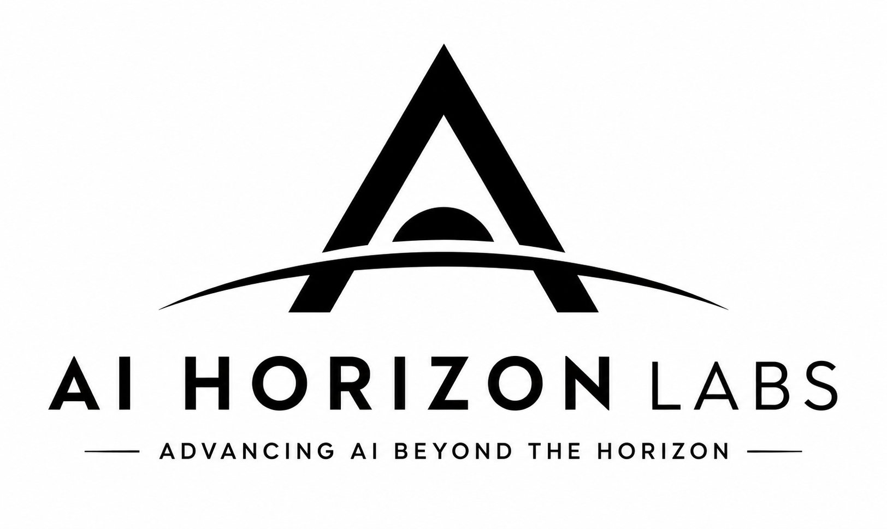
Mono - fundo claro
Preto sobre branco. Tagline "Advancing AI Beyond the Horizon".
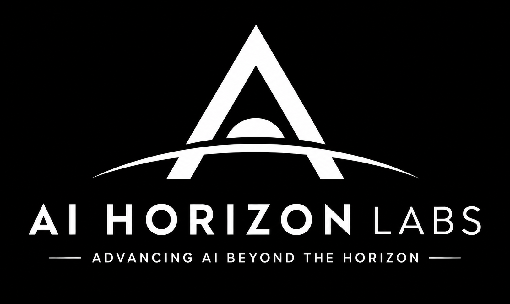
Mono - fundo escuro
Branco sobre preto, para aplicações invertidas.
Lockup horizontal
Cabeçalhos e bannersComposição na horizontal, com o símbolo à esquerda e o nome à direita. Formato ideal para cabeçalho do site, assinaturas de e-mail, banners e papel timbrado. Disponível em azul e monocromático, com tagline em português e inglês.
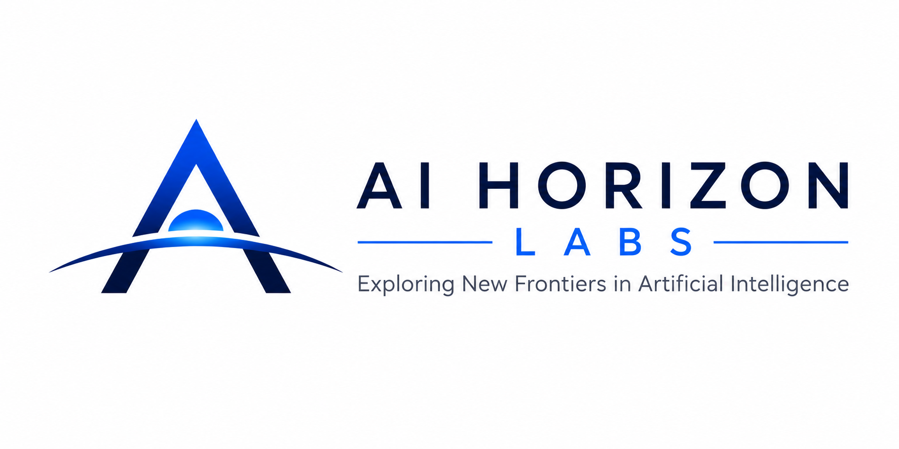
Horizontal azul - EN
"Exploring New Frontiers in Artificial Intelligence".
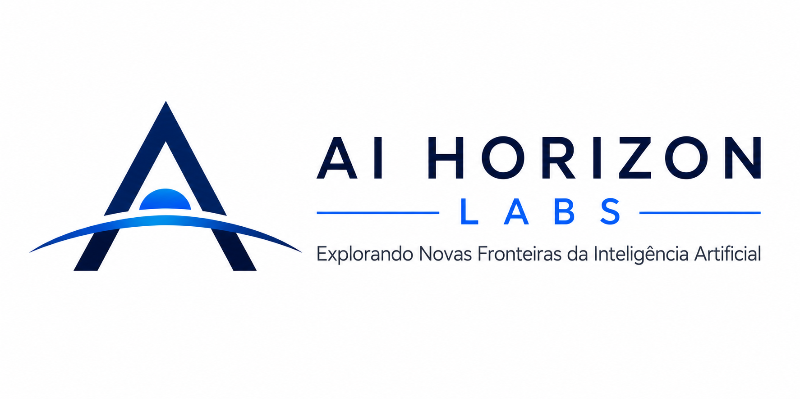
Horizontal azul - PT
"Explorando Novas Fronteiras da Inteligência Artificial".
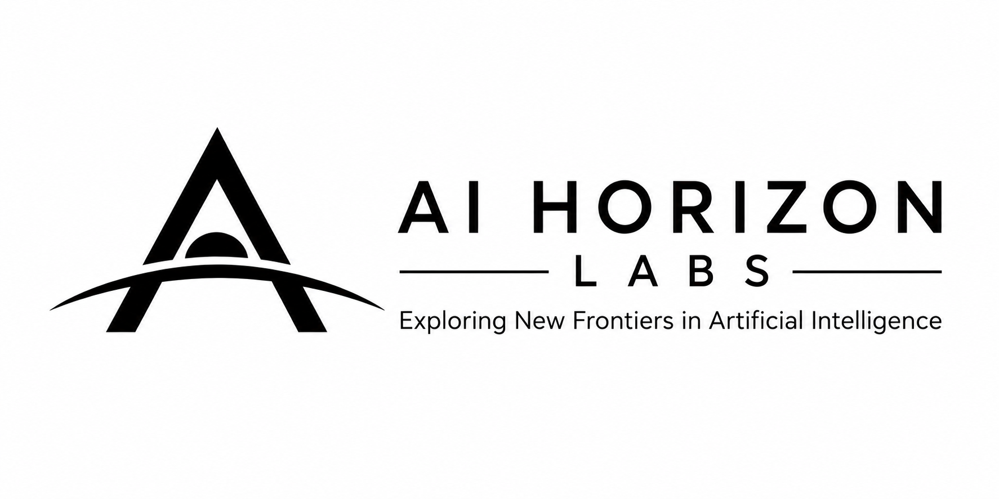
Horizontal mono - EN
Versão preto e branco, tagline em inglês.
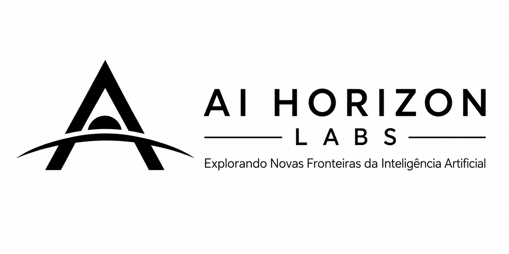
Horizontal mono - PT
Versão preto e branco, tagline em português.
Sistema de marca e versões claro/escuro
Folhas de aplicaçãoComposições mais completas, que apresentam os pilares do laboratório (Pesquisa Aplicada, Inovação Científica, Engenharia de Software e Impacto Real) e o comportamento da marca em fundos claro e escuro. Úteis para avaliar a marca como sistema, não só como ícone isolado.
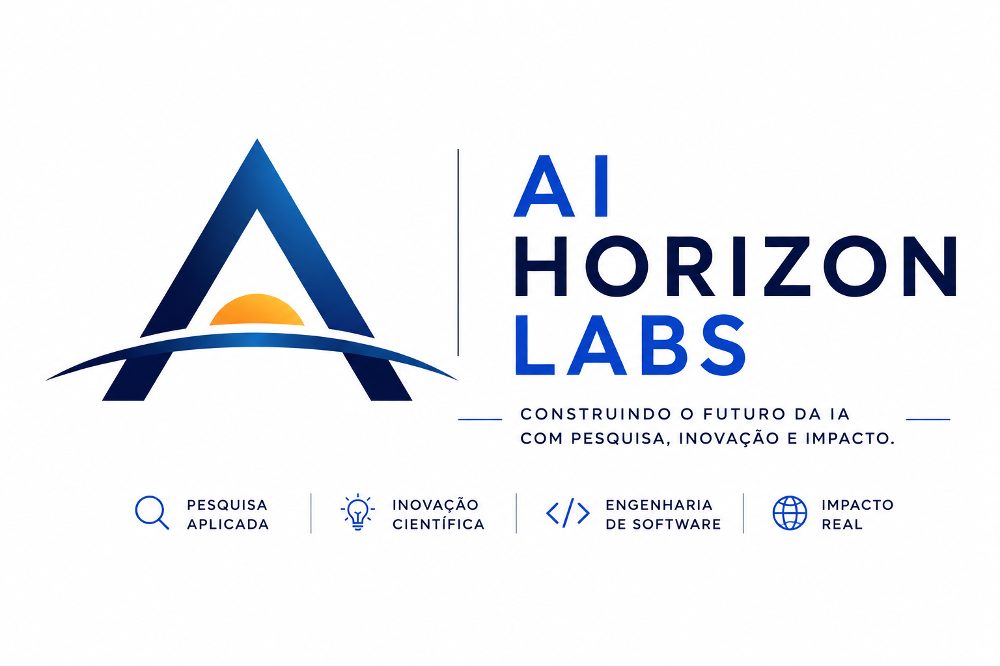
Sistema com pilares - cor
Tagline "Construindo o futuro da IA" e os quatro pilares.
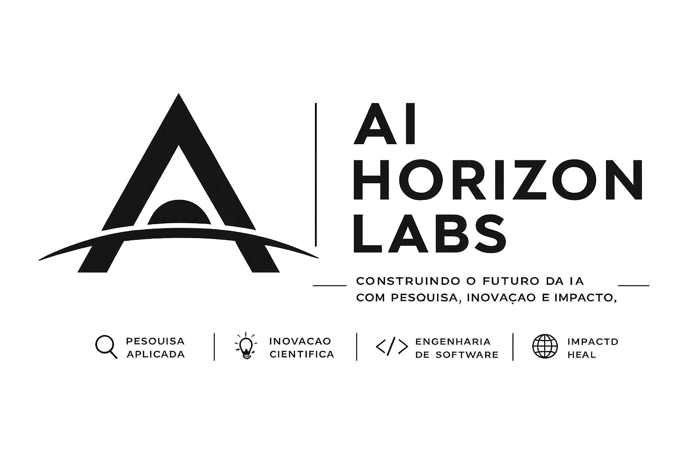
Sistema com pilares - mono
Mesma estrutura em preto e branco.
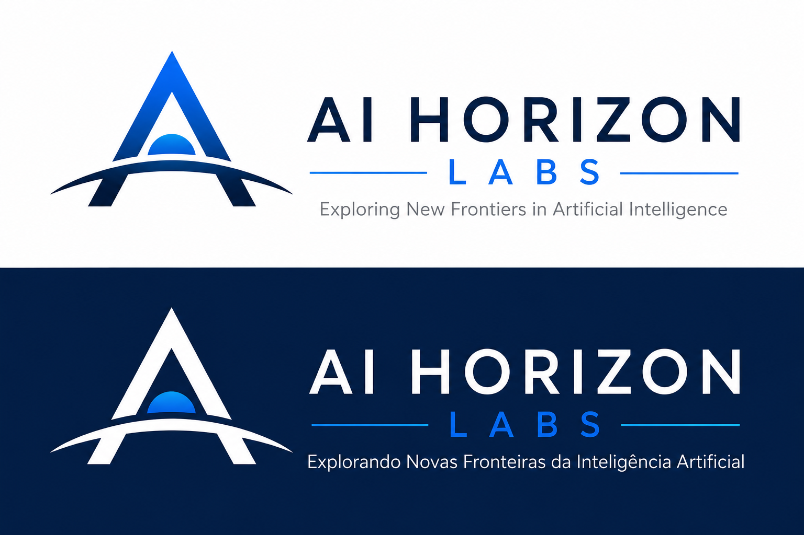
Par claro/escuro - bilíngue
Mesma marca em fundo branco (EN) e fundo navy (PT).
Brindes e aplicações
Em brindes e materiais promocionais, use o símbolo isolado (o "A" com o sol e o horizonte). Ele se mantém legível em superfícies pequenas e curvas.
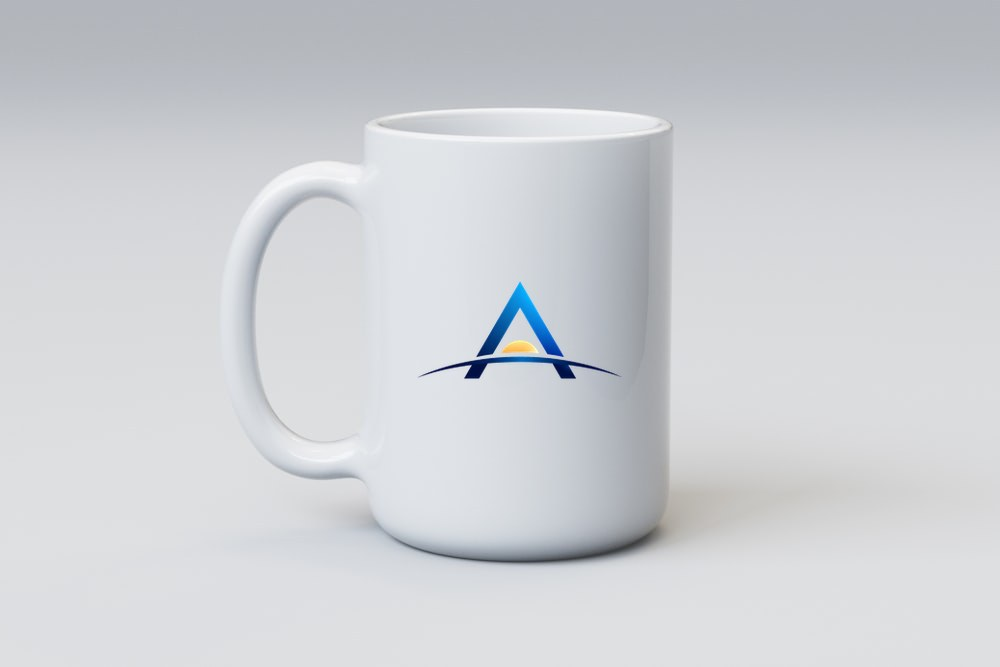
Canecas
Símbolo colorido centralizado sobre caneca branca.
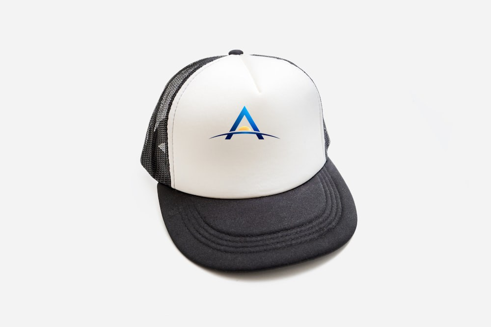
Bonés
Símbolo aplicado na frente do boné branco.
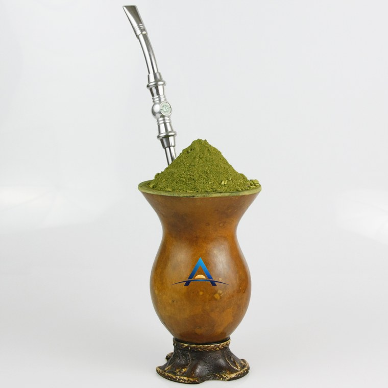
Cuia de chimarrão
Porongo natural com o símbolo aplicado no corpo da cuia.
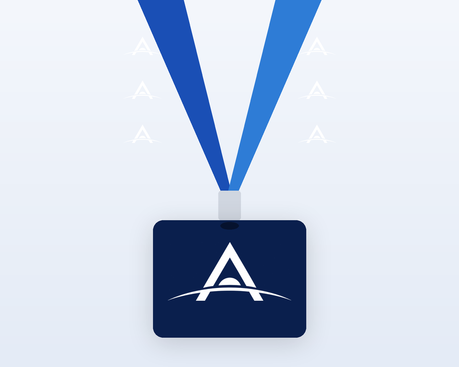
Cordões
Símbolo repetido na fita e no porta-crachá.
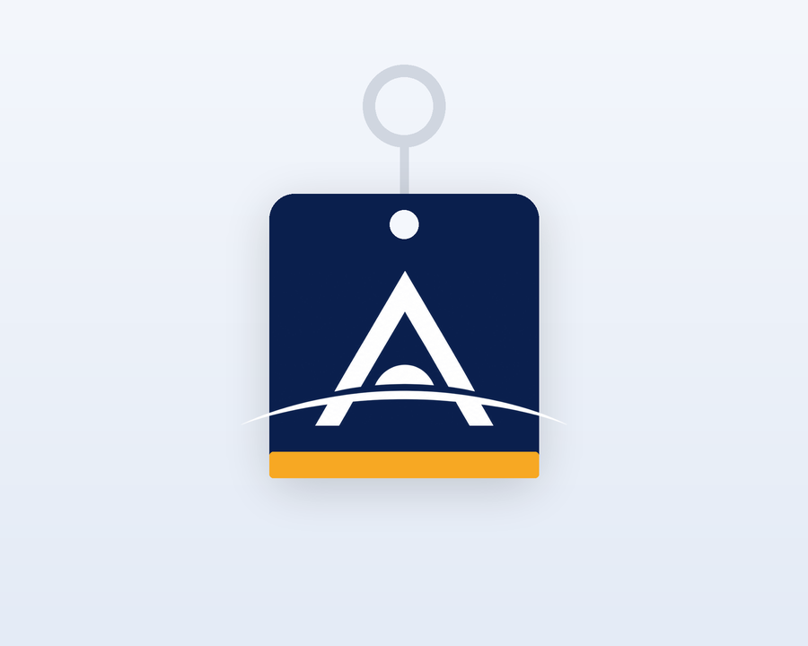
Chaveiros
Tag navy com filete dourado e símbolo em branco.
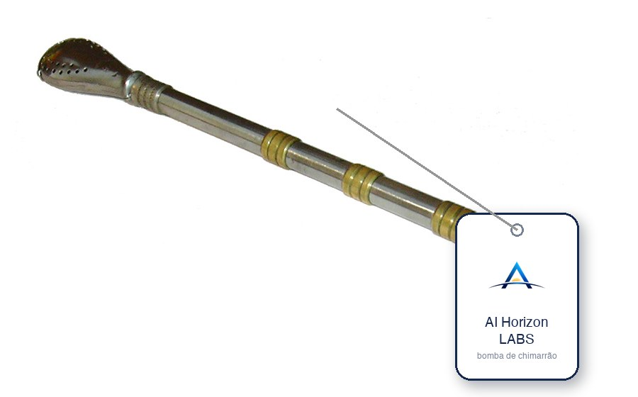
Bomba de chimarrão
Bomba de prata com etiqueta da marca.
Fotos base da cuia e da bomba: ChimaAddicted (CC BY-SA 4.0) e André Karwath (Aka) (CC BY-SA 2.5), via Wikimedia Commons. O símbolo da marca foi aplicado sobre as fotos; as imagens derivadas mantêm a licença CC BY-SA.
Propostas e ideias são bem-vindas
Esta identidade está sendo construída de forma colaborativa. Tem uma sugestão de cor, símbolo, tipografia, tagline ou até uma proposta de logo inteira? Compartilhe conosco - toda contribuição ajuda a definir a cara do AI Horizon Labs.
Enviar proposta Página de contato